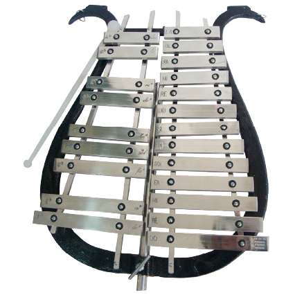

LIRAS
La lira de marcha es un instrumento musical de viento metal que se destaca por su sonido brillante y penetrante, utilizado tradicionalmente en bandas militares y desfiles. Su diseño compacto y ligero la convierte en una opción popular entre músicos que necesitan movilizarse mientras interpretan. En este artículo, exploraremos a fondo las características, ventajas y desventajas de la lira de marcha en comparación con otros instrumentos similares, como la trompeta o el clarinete.
